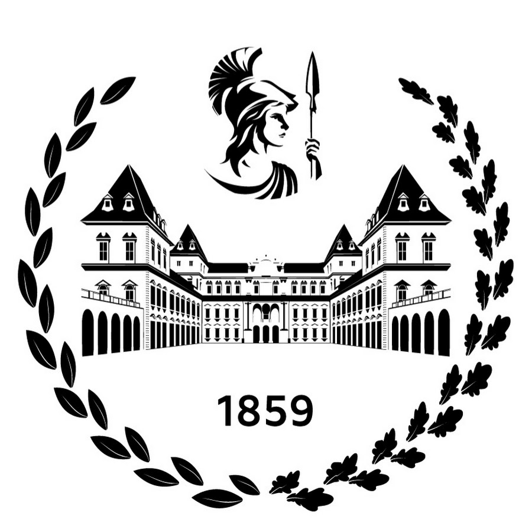
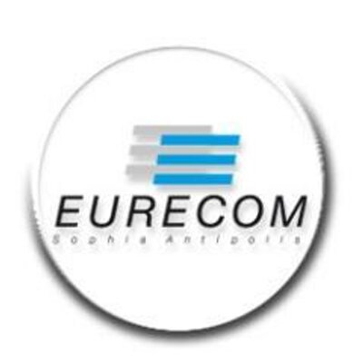
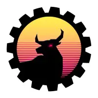
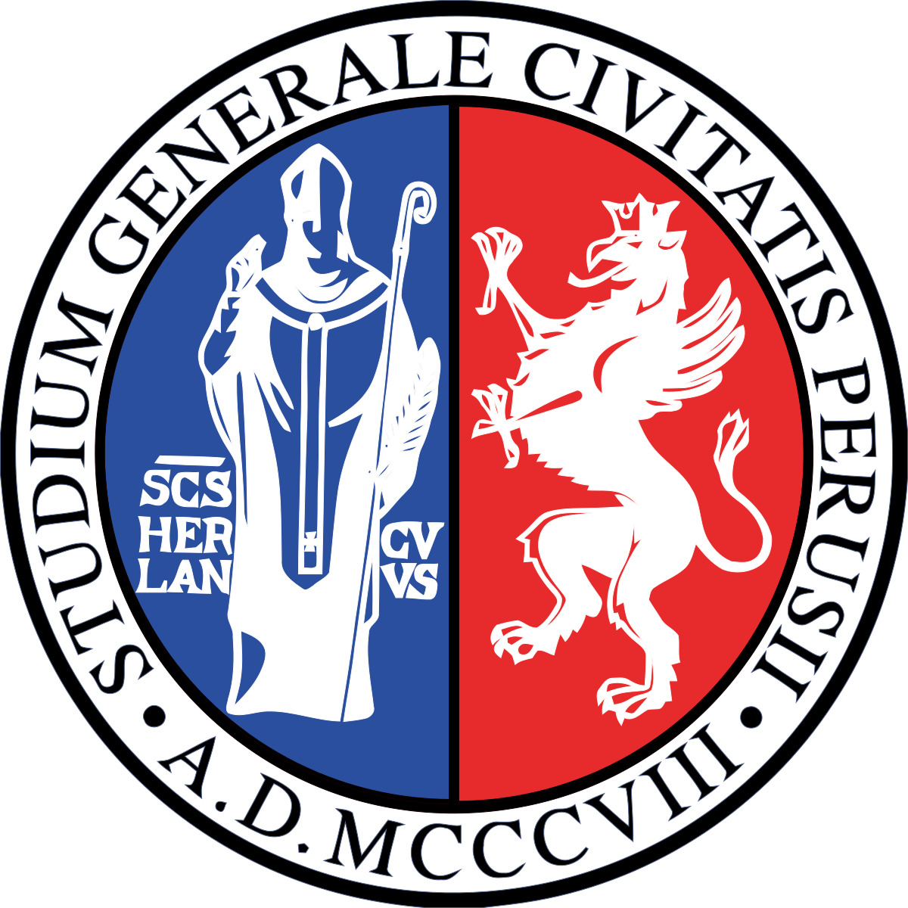
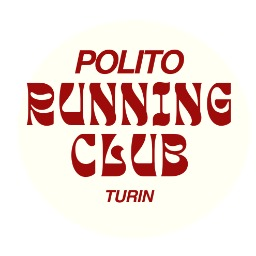
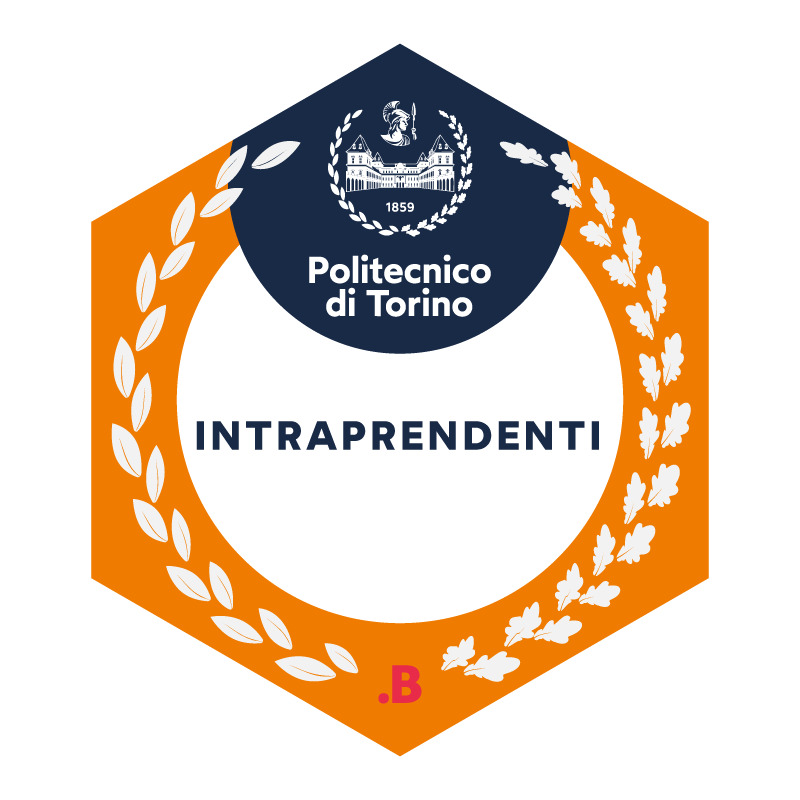

Computer architecture, digital design, RTL design, embedded systems, and hardware-aware system implementation across coursework, projects, and research.
About
Secure RISC-V systems, side channels, cache-timing attacks, and low-level architectural behavior.
Arithmetic units, RISC-V ISA extensions, accelerator design, microarchitecture, and SoC integration.
Verilog, VHDL, Synopsys DC Shell, PrimeTime, QuestaSim, Verilator, QEMU, GCC, TCL, and low-level C workflows.
Education
Master's Thesis Student
Designing a configurable multi-datatype arithmetic unit for ML workloads. Extending the MXDOTP RISC-V ISA extension to support FP16 accumulation and mixed-datatype operations under the supervision of Danilo Cammarata, Gamze Islamoglu, and Prof. Dr. L. Benini.

Master's Degree in Electronic Engineering
Specialization in Embedded Systems. GPA 29.1/30. Main courses include Computer Architectures, Microelectronic Systems, Integrated Systems Architecture, Synthesis and Optimization of Digital Systems, and Operating Systems.

Master's Degree in Internet of Things
Double-degree program with Politecnico di Torino. Main courses include Machine Learning and Intelligent Systems, Reinforcement Learning, System Security, and Software Development. Semester project on RISC-V vulnerabilities.
Bachelor's Degree in Electronic Engineering
Final grade: 109/110. Final project on the FPGA-based digital control of a sensor for agro-tech applications, based on complex ASM. Double-degree program with Tongji University, Shanghai, China.
Experience
Graduate Researcher
Research under Prof. Pacalet on hardware security and side-channel attacks targeting RISC-V processors, with a focus on cache-timing vulnerabilities and microarchitectural leakage.

Electronics Division Leader
Led the electronics division, coordinated a student team, managed deadlines, and developed supercapacitor modules for RMNA 2025 in San Diego. Also mentored junior members and supported collaboration across divisions.

Research Collaborator
Worked under Prof. S. Simonetti on biomechanical support systems. Designed and validated a back brace monitoring system using force-sensing resistor sensors.
Teaching Assistant
Teaching assistant for the Computer Science (Python) course in the academic year 2023/2024, supporting students during programming labs and algorithmic design activities.
Undergraduate Researcher
Supervised by Prof. X. Gong on biological signal processing and EEG-based brain-computer interfaces for emotion recognition. The work led to a publication at IEEE ICNC-FSKD 2024.
Selected Projects
Accelerator
Multichannel Conv1D Hardware Accelerator
RTL 1D convolution accelerator designed under strict resource constraints, with output-centric scheduling, tiling, Croc SoC integration, bare-metal C drivers, and end-to-end validation through Verilator and RTL-to-GDSII tooling.
Processor DesignPipelined Processor
RTL implementation of a fully pipelined DLX processor with full instruction support, branch prediction, hazard management, forwarding logic, and a datapath optimized for digital-design performance exploration.
Hardware SecurityCache-Timing AES on RISC-V
Experimental Prime+Probe analysis of T-table AES on a RISC-V platform, with per-set leakage analysis, noise-aware classification, and partial key recovery.
Operating SystemsLinux Scheduler Experiments
Linux scheduler experiments focused on low-level operating-systems behavior, scheduling exploration, and systems work around GCC and QEMU-based workflows.
EmbeddedPACMAN Embedded Game
Custom Pac-Man game for the LandTiger LPC1768 board built in Keil uVision, including movement, scoring, lives, timing, A* ghost behavior, chase and frightened modes, and sound effects.
ASIC FlowMulti-Vth Power Optimization Algorithm
TCL-based low-power optimization flow that reduces leakage by selectively swapping cells to higher-Vth variants while preserving timing, with automation for tuning and result aggregation in Synopsys PrimeTime.
Publication, Awards, and Profile
Publication
M. Zhao, G. Fortunelli, Z. He, X. Gong, A. Cohn. Phase-Amplitude Coupling of EEG Applied in Music-Induced Emotional Recognition Tasks. ICNC-FSKD, IEEE, 2024.
Technical Profile
Hands-on work across RTL design, Verilog and VHDL development, ASIC-oriented flows, Synopsys-based synthesis and timing work, QEMU and GCC low-level systems experimentation, and hardware security research on RISC-V platforms.
RTL Design
ASIC
Verilog
VHDL
C
Python
TCL
RISC-V
Synopsys DC Shell
Synopsys PrimeTime
QuestaSim
QEMU
GCC
Verilator
Side-Channel Analysis
Awards
- Politong Scholarship for the PoliTo-Tongji double-degree program.
- Erasmus Scholarship for the PoliTo-EURECOM double-degree program.
- Progetto Intraprendenti Honors Program, selected among the top 200 students.
- Matematica e Realta National Math Competition, winner of the 2021 edition.
Languages
- Italian - Native
- English - Advanced C1
- French - Basic
- Chinese - Basic
Extracurricular

Co-Founder
Co-founded and managed a community of more than 1,500 members, organizing weekly events and large-scale collaborations with sportswear and automotive brands.

Selected Student
Honors program focused on problem solving, teamwork, and high-potential student development at Politecnico di Torino.